trait Encoder[A] {
def apply(a: A): Json // <-- JSON as data
}
object Encoder {
given encodeString: Encoder[String] = ...
given encodeInt: Encoder[Int] = ...
given encodeDouble: Encoder[Double] = ...
}Slow-Auto, Inconvenient-Semi
escaping false dichotomy with sanely-automatic derivation
Mateusz Kubuszok
About me
breaking things in Scala for 9 years
a little bit of open source - including co-authoring Chimney for over 7 years now
blog at Kubuszok.com
niche Things you need to know about JVM (that matter in Scala) ebook
Agenda
what is a type class
what is type class derivation
automatic and semi-automatic derivation a’la Circe
semi-automatic derivation a’la Jsoniter
sanely-automatic derivation a’la Chimney
does it matter to a library users how these approach differ
Examples
Type class
interface
with type paremeters
whose implementation can be automatically provided based on their type only
extension [A](value: A) {
def asJson(using encoder: Encoder[A]): Json = encoder(value)
}"value".asJson // using Encoder.encodeString
1024.asJson // using Encoder.encodeInt
3.13.asJson // using Encoder.encodeDoubleWhat if nobody wrote the implementation explicitly for my type?
case class Address(value: String)
case class User(name: String, address: Address)Address("Paper St. 19").asJson // ???
User("John Smith", Address("Paper St. 19")).asJson // ???No given instance of type Encoder[Address] was found for parameter encoder of
method asJson in object ...
No given instance of type Encoder[User] was found for parameter encoder of
method asJson in object ...Type class derivation
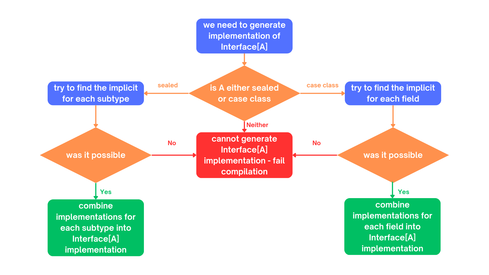
(If you don’t understand this diagram, you probably haven’t spend 600h on a topic that most sane people avoid. The main reason we have these images is because people like colorful images on slides.)
Derivation a’la Circe
trait Encoder[A] {
def apply(a: A): Json // <-- JSON as data
}extension [A](value: A) {
def asJson(using encoder: Encoder[A]): Json = encoder(value)
}case class Address(value: String)
case class User(name: String, address: Address)import MagicImportOfSomethingThatCreatesEncoders.given
Address("Paper St. 19").asJson // generates Encoder[Address] on demand
User("John Smith", Address("Paper St. 19")).asJson // ditto but for Userimport ImportOfSomethingThatLetsYouCreateEncoders.deriveEncoder
given addressEncoder: Encoder[Address] = deriveEncoder[Address]
given userEncoder: Encoder[User] = deriveEncoder[User]
Address("Paper St. 19").asJson // using addressEncoder
User("John Smith", Address("Paper St. 19")).asJson // using userEncoderAutomatic derivation of Address
implicitly[Encoder[Address]] // <-- using Encoder[Address]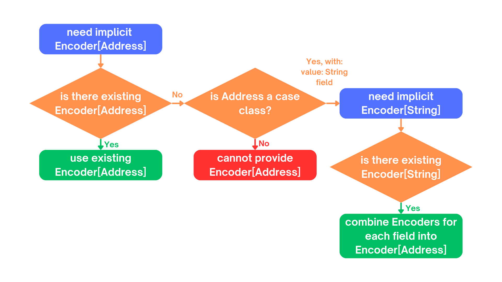
Semi-automatic derivation of Address
deriveEncoder[Address] // <-- creates new Encoder[Address]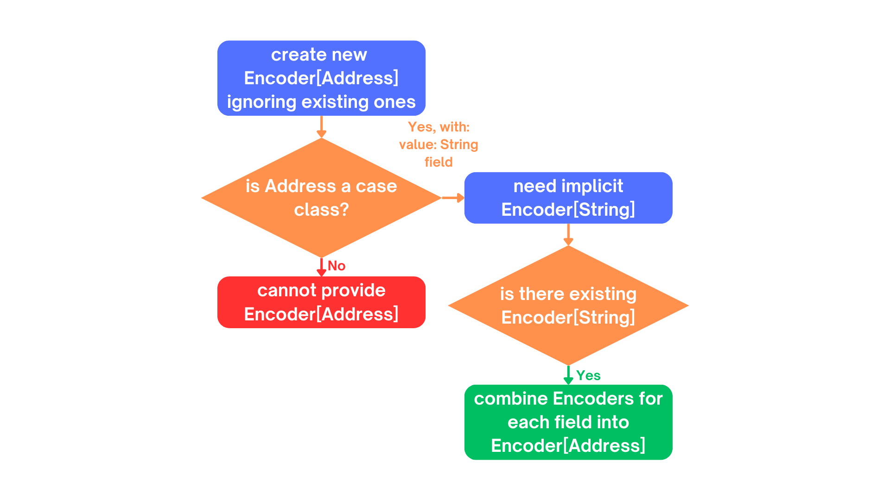
Automatic derivation of User
implicitly[Encoder[User]] // <-- using Encoder[User]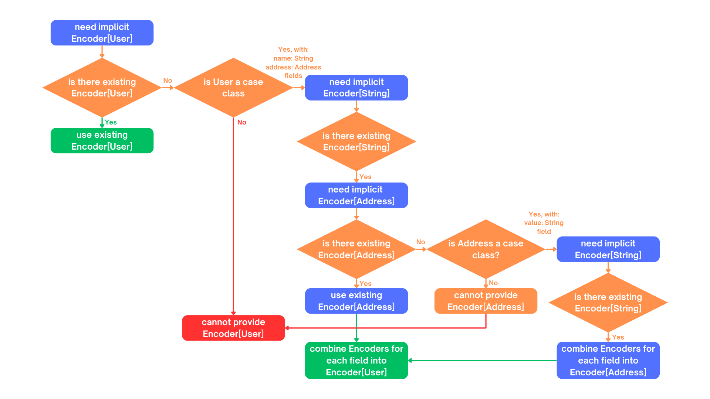
Semi-automatic derivation of User
implicitly[Encoder[User]] // <-- creates new Encoder[User]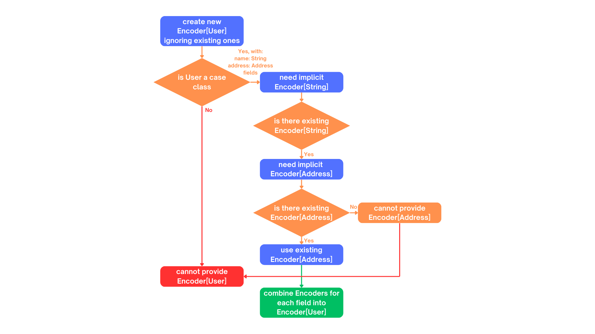
OK, but where is the code?
Wouldn’t it be easier to understand with some examples?
1. We are focusing on user-side of the derivation story
2. Code is in the link
3. If you really need the derivation-internals-explanation-experience

Why people bother with semi-automatic derivation?
1. They want to make sure that they use the same implementation everywhere
2. "Speed"
// We're use Circe:
// trait Encoder[A] { ... } turns A -> Json
// trait Decoder[A] { ... } turns Json -> Either[Decoder.DecodingError, A]
case class Out(...) // <-- really big case class with nested case classes
// value -> Json -> value again
def roundTrip(out: Out): (Json, Either[Decoder.DecodingError, Out]) = {
val json = out.asJson // <-- encode as Json using Encoder[Out]
val parsed = json.as[Out] // <-- decode from Json using Decoder[Out]
json -> parsed
}// Semi-automatic version will just have this:
implicit val in1Decoder: Decoder[In1] = deriveDecoder
implicit val in1Encoder: Encoder[In1] = deriveEncoder
implicit val in2Decoder: Decoder[In2] = deriveDecoder
implicit val in2Encoder: Encoder[In2] = deriveEncoder
implicit val in3Decoder: Decoder[In3] = deriveDecoder
implicit val in3Encoder: Encoder[In3] = deriveEncoder
implicit val in4Decoder: Decoder[In4] = deriveDecoder
implicit val in4Encoder: Encoder[In4] = deriveEncoder
implicit val in5Decoder: Decoder[In5] = deriveDecoder
implicit val in5Encoder: Encoder[In5] = deriveEncoder
implicit val outDecoder: Decoder[Out] = deriveDecoder
implicit val outEncoder: Encoder[Out] = deriveEncoder
// instead of automatic derivation import.This shouldn’t be hard?
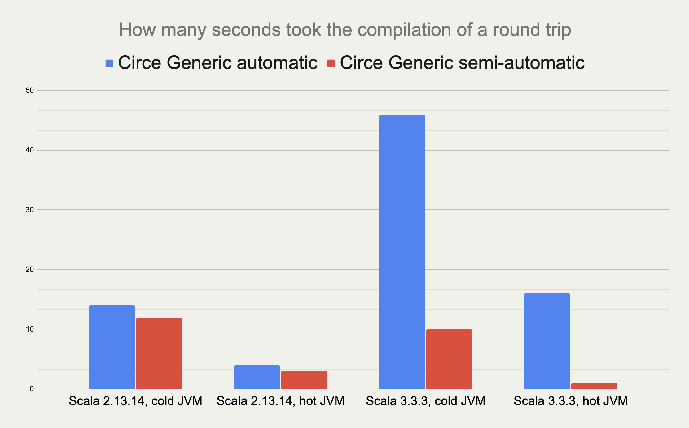
(less is better)
Scala 2.13.14
[info] Benchmark Mode Cnt Score Error Units
[info] JsonRoundTrips.circeGenericAuto thrpt 10 7.319 ± 0.011 ops/ms
[info] JsonRoundTrips.circeGenericSemi thrpt 10 6.775 ± 0.013 ops/msScala 3.3.3
[info] Benchmark Mode Cnt Score Error Units
[info] JsonRoundTrips.circeGenericAuto thrpt 10 0.490 ± 0.432 ops/ms
[info] JsonRoundTrips.circeGenericSemi thrpt 10 4.607 ± 0.014 ops/ms(more is better)
Auto vs Semi on Scala 2
PR #5649 - Faster compilation of inductive implicits (closed)
PR #6481 - Topic/inductive implicits 2.13.x (closed)
PR #6580 - Prune polymorphic implicits more aggressively (merged)
PR #7012 - Speed up implicit resolution by avoiding allocations when traversing TypeRefs in core (merged)
and more
1) baseline - scalac 2.13.x 2) scalac 2.13.x with matchesPtInst
HList Size
50 4 3
100 7 3
150 15 4
200 28 4
250 48 5
300 81 6
350 126 8
400 189 11
450 322 13
500 405 16 Compile time in secondsCould something else improve performance?
Magnolia
alternative to Shapeless/Mirrors
boasts about:
better API
better performance
better compilation times
better error messages when derivation fail
Error messages
Semi-automatic derivation
case class Street(name: Either[String, Nothing]) // <-- should not be able to derive name
case class Address(street: Street)
case class User(name: String, address: Address)implicit val streetEncoder: Encoder[Street] = deriveEncoder
implicit val addressEncoder: Encoder[Address] = deriveEncoder
implicit val userEncoder: Encoder[User] = deriveEncoder
user.asJsonShapeless' errors
could not find Lazy implicit value of type DerivedAsObjectEncoder[Street]
implicit val streetEncoder: Encoder[Street] = deriveEncoder
^Mirrors' errors
implicit val streetEncoder: Encoder[Street] = deriveEncoder
^^^^^^^^^^^^^
Failed to find an instance of Encoder[Either[String, Nothing]]Magnolia’s errors
magnolia: could not find Encoder.Typeclass for type Either[String,Nothing]
in parameter 'name' of product type Street
implicit val streetEncoder: Encoder[Street] = EncoderSemi.derived
^Automatic derivation
case class Street(name: Either[String, Nothing])
case class Address(street: Street)
case class User(name: String, address: Address)
user.asJsonShapeless/Mirrors/Magnolia
could not find implicit value for parameter encoder: Encoder[User]
user.asJson
^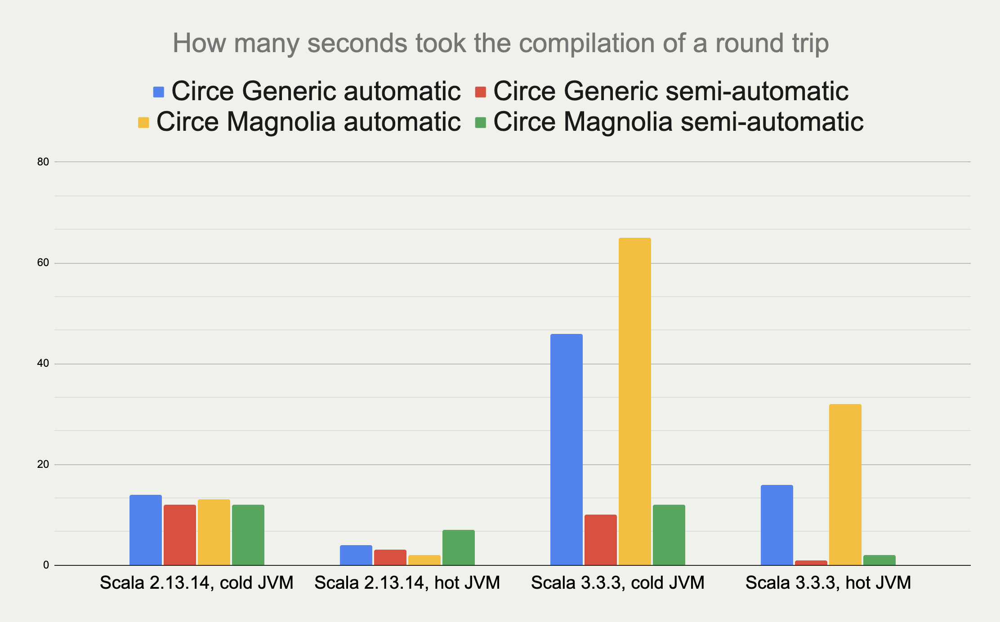
(less is better)
Scala 2.13.14
[info] Benchmark Mode Cnt Score Error Units
[info] JsonRoundTrips.circeGenericAuto thrpt 10 7.319 ± 0.011 ops/ms
[info] JsonRoundTrips.circeGenericSemi thrpt 10 6.775 ± 0.013 ops/ms
[info] JsonRoundTrips.circeMagnoliaAuto thrpt 10 7.689 ± 0.013 ops/ms
[info] JsonRoundTrips.circeMagnoliaSemi thrpt 10 7.838 ± 0.013 ops/msScala 3.3.3
[info] Benchmark Mode Cnt Score Error Units
[info] JsonRoundTrips.circeGenericAuto thrpt 10 0.490 ± 0.432 ops/ms
[info] JsonRoundTrips.circeGenericSemi thrpt 10 4.607 ± 0.014 ops/ms
[info] JsonRoundTrips.circeMagnoliaAuto thrpt 10 0.077 ± 0.039 ops/ms
[info] JsonRoundTrips.circeMagnoliaSemi thrpt 10 5.590 ± 0.013 ops/ms(more is better)
Shapeless/Mirrors/Magnolia - different APIs, same approach.
Did anyone try something else?
Jsoniter Scala
prioritizes performance
no automatic derivation
no need to derive intermediate instances
How?
// Yes, only 1 codec, no need to manually derive implicits for nested cases
implicit val outCodec: JsonValueCodec[Out] =
JsonCodecMaker.make(CodecMakerConfig.withAllowRecursiveTypes(true))
def roundTrip(out: Out): (String, Either[Throwable, Out]) = {
val str = writeToString(out)
val parsed = scala.util.Try(readFromString(str)).toEither
str -> parsed
}Recursive semi-automatic derivation
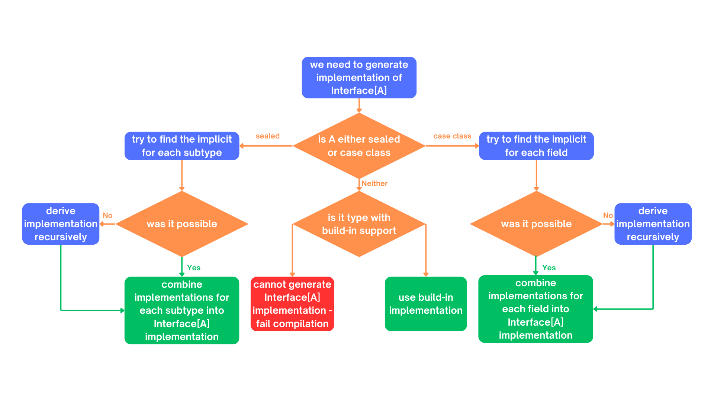
Recursive semi-automatic derivation
delegates everything to implicit search
types supported OOTB are handled via implicits in companion object
use implicit search only for overrides
types supported OOTB are handled by macro, implicit scope is empty by default
OK, but what does this gibberish mean for users?
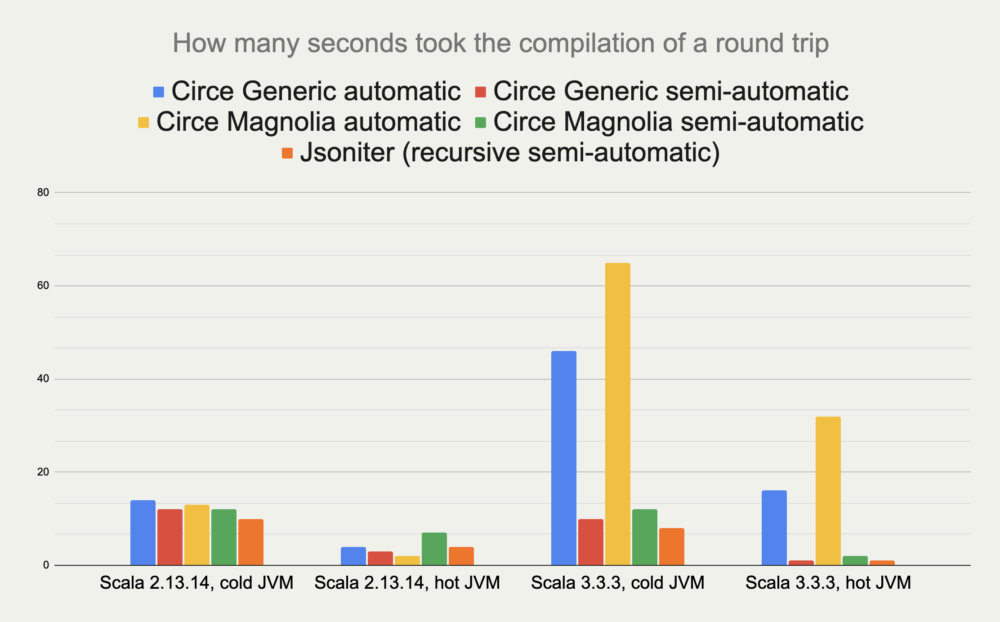
(less is better)
Scala 2.13.14
[info] Benchmark Mode Cnt Score Error Units
[info] JsonRoundTrips.circeGenericAuto thrpt 10 7.319 ± 0.011 ops/ms
[info] JsonRoundTrips.circeGenericSemi thrpt 10 6.775 ± 0.013 ops/ms
[info] JsonRoundTrips.circeMagnoliaAuto thrpt 10 7.689 ± 0.013 ops/ms
[info] JsonRoundTrips.circeMagnoliaSemi thrpt 10 7.838 ± 0.013 ops/ms
[info] JsonRoundTrips.jsoniterScalaSemi thrpt 10 20.081 ± 0.151 ops/msScala 3.3.3
[info] Benchmark Mode Cnt Score Error Units
[info] JsonRoundTrips.circeGenericAuto thrpt 10 0.490 ± 0.432 ops/ms
[info] JsonRoundTrips.circeGenericSemi thrpt 10 4.607 ± 0.014 ops/ms
[info] JsonRoundTrips.circeMagnoliaAuto thrpt 10 0.077 ± 0.039 ops/ms
[info] JsonRoundTrips.circeMagnoliaSemi thrpt 10 5.590 ± 0.013 ops/ms
[info] JsonRoundTrips.jsoniterScalaSemi thrpt 10 21.480 ± 0.070 ops/ms(more is better)
But can it be automatic?
Automatic derivation a’la Chimney
Similar problem:
derivation should be recursive
macro should only use implicits for overrides
But:
automatic derivation should be available without breaking the 2 above
Solution
trait TypeClass[A] extends TypeClass.AutoDerived[A] { ... }
object TypeClass {
// semi-automatic derivation of TypeClass[A]
inline def derived[A]: TypeClass[A] = ${ derivedImpl[A] }
trait AutoDerived[A] { ... }
object AutoDerived extends AutoDerivedLowPriorityImplicits
trait AutoDerivedLowPriorityImplicits {
// automatic derivation of TypeClass.AutoDerived[A]
inline given derived[A]: AutoDerived[A] = ${ derivedImpl[A] }
}
}extension [A](value: A)
// uses TypeClass[A] defined by user manually or with TypeClass.derived,
// falling back on automatic derivation
def method(using TypeClass.AutoDerived[A]) = ...// allowed to try summoning TypeClass[Sth].
// NOT allowed to try summoning TypeClass.AutoDerived[Sth]!
def derivedImpl[A: Type]: Expr[TypeClass[A]] = ...(Disclaimer: understanding this code is not necessary to understand its implications on the next slides)
Can we test it outside Chimney?
Yes.
Sanely-automatic derivation
I implemented wrapper around Jsoniter (on Scala 3-only) which works like this:
import jsonitersanely.* // <-- 1 import, like with std automatic derivation
def roundTrip(out: Out): (String, Either[Throwable, Out]) = {
val str = write(out)
val parsed = scala.util.Try(read[Out](str)).toEither
str -> parsed
}How does it compare to Circe or normal Jsoniter Scala?
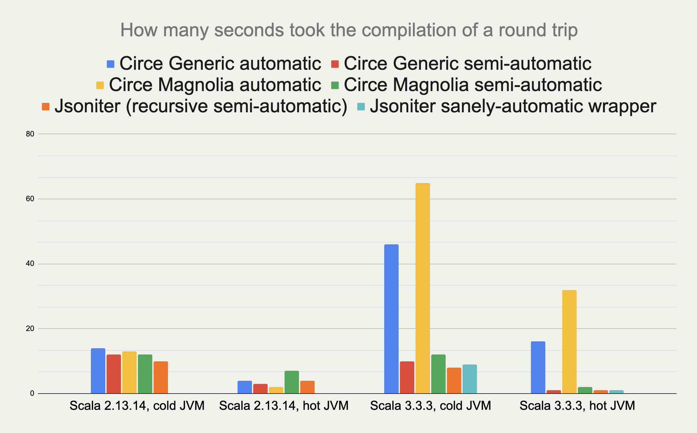
(less is better)
Scala 2.13.14
[info] Benchmark Mode Cnt Score Error Units
[info] JsonRoundTrips.circeGenericAuto thrpt 10 7.319 ± 0.011 ops/ms
[info] JsonRoundTrips.circeGenericSemi thrpt 10 6.775 ± 0.013 ops/ms
[info] JsonRoundTrips.circeMagnoliaAuto thrpt 10 7.689 ± 0.013 ops/ms
[info] JsonRoundTrips.circeMagnoliaSemi thrpt 10 7.838 ± 0.013 ops/ms
[info] JsonRoundTrips.jsoniterScalaSemi thrpt 10 20.081 ± 0.151 ops/msScala 3.3.3
[info] Benchmark Mode Cnt Score Error Units
[info] JsonRoundTrips.circeGenericAuto thrpt 10 0.490 ± 0.432 ops/ms
[info] JsonRoundTrips.circeGenericSemi thrpt 10 4.607 ± 0.014 ops/ms
[info] JsonRoundTrips.circeMagnoliaAuto thrpt 10 0.077 ± 0.039 ops/ms
[info] JsonRoundTrips.circeMagnoliaSemi thrpt 10 5.590 ± 0.013 ops/ms
[info] JsonRoundTrips.jsoniterScalaSemi thrpt 10 21.480 ± 0.070 ops/ms
[info] JsonRoundTrips.jsoniterScalaSanely thrpt 10 21.408 ± 0.070 ops/ms(more is better)
But Jsoniter parsing String s vs Circe parsing Json might be apples vs oranges.
Can we have some more fair comparison?
More fair comparison
trait FastShowPretty[A] {
def showPretty(
value: A,
sb: StringBuilder,
indent: String = " ",
nesting: Int = 0
): StringBuilder
}
implicit class FastShowPrettyOps[A](private val value: A) {
def showPretty(indent: String = " ", nesting: Int = 0)(
implicit fsp: FastShowPretty[A]
): String =
fsp.showPretty(value, new StringBuilder, indent, nesting).toString()
}case class Street(name: String)
case class Address(street: Street)
case class User(name: String, address: Address)
println(User("John", Address(Street("Paper St"))).showPretty())User(
name = "John",
address = Address(
street = Street(
name = "Paper St"
)
)
)automatic and semi-automatic derivation using Shapeless (Scala 2)
automatic and semi-automatic derivation using Mirror s (Scala 3)
automatic and semi-automatic derivation using Magnolia (Scala 2 & 3)
sanely-automatic derivation with macros and Chimney macro commons (Scala 2 & 3)
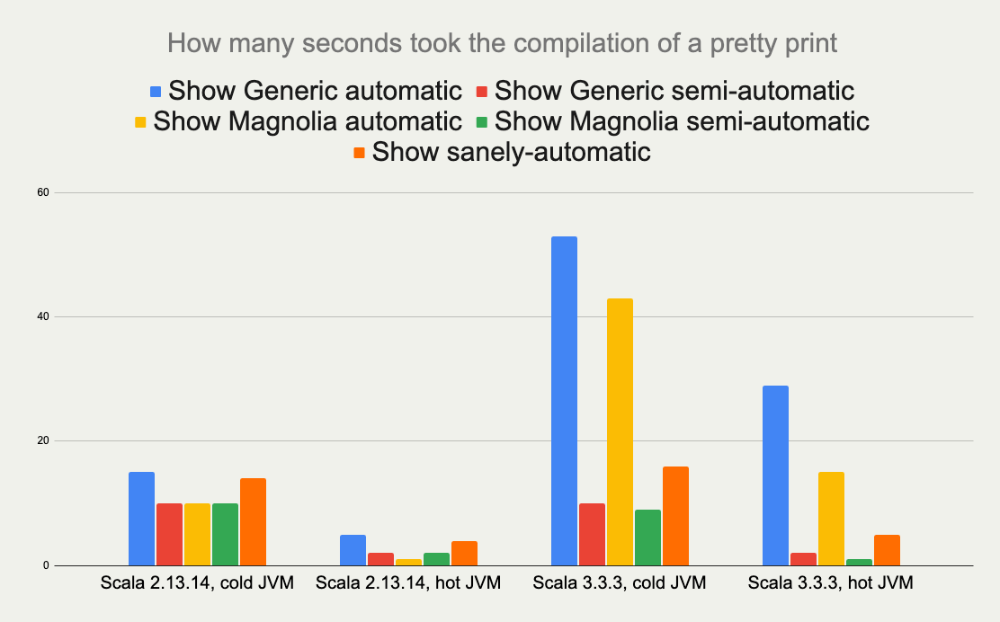
(less is better)
Scala 2.13.14
[info] Benchmark Mode Cnt Score Error Units
[info] ShowOutputs.showGenericProgrammingAuto thrpt 10 2.651 ± 0.012 ops/ms
[info] ShowOutputs.showGenericProgrammingSemi thrpt 10 2.829 ± 0.033 ops/ms
[info] ShowOutputs.showMagnoliaAuto thrpt 10 3.621 ± 0.017 ops/ms
[info] ShowOutputs.showMagnoliaSemi thrpt 10 3.745 ± 0.028 ops/ms
[info] ShowOutputs.showSanely thrpt 10 2.202 ± 0.359 ops/msScala 3.3.3
[info] Benchmark Mode Cnt Score Error Units
[info] ShowOutputs.showGenericProgrammingAuto thrpt 10 0.156 ± 0.013 ops/ms
[info] ShowOutputs.showGenericProgrammingSemi thrpt 10 3.492 ± 0.013 ops/ms
[info] ShowOutputs.showMagnoliaAuto thrpt 10 0.090 ± 0.023 ops/ms
[info] ShowOutputs.showMagnoliaSemi thrpt 10 3.918 ± 0.012 ops/ms
[info] ShowOutputs.showSanely thrpt 10 2.204 ± 0.396 ops/msBut wait.
Jsoniter had one more trick. It "caches" subroutines as def s.
Would that make a difference?
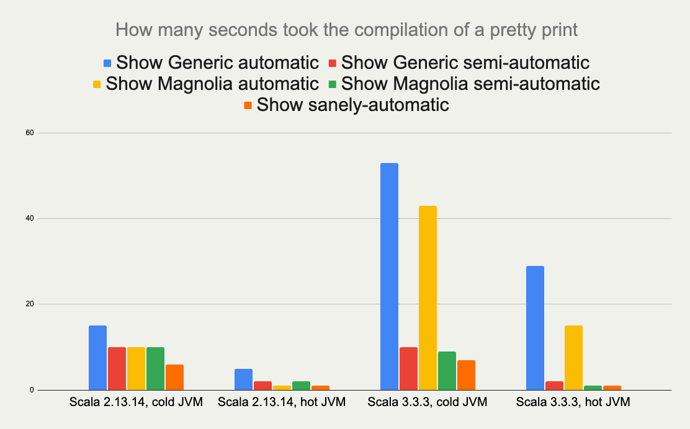
(less is better)
Scala 2.13.14
[info] Benchmark Mode Cnt Score Error Units
[info] ShowOutputs.showGenericProgrammingAuto thrpt 10 2.651 ± 0.012 ops/ms
[info] ShowOutputs.showGenericProgrammingSemi thrpt 10 2.829 ± 0.033 ops/ms
[info] ShowOutputs.showMagnoliaAuto thrpt 10 3.621 ± 0.017 ops/ms
[info] ShowOutputs.showMagnoliaSemi thrpt 10 3.745 ± 0.028 ops/ms
[info] ShowOutputs.showSanely thrpt 10 4.811 ± 0.026 ops/msScala 3.3.3
[info] Benchmark Mode Cnt Score Error Units
[info] ShowOutputs.showGenericProgrammingAuto thrpt 10 0.156 ± 0.013 ops/ms
[info] ShowOutputs.showGenericProgrammingSemi thrpt 10 3.492 ± 0.013 ops/ms
[info] ShowOutputs.showMagnoliaAuto thrpt 10 0.090 ± 0.023 ops/ms
[info] ShowOutputs.showMagnoliaSemi thrpt 10 3.918 ± 0.012 ops/ms
[info] ShowOutputs.showSanely thrpt 10 4.800 ± 0.042 ops/msBonus: debugging
case class Street(name: Either[String, Nothing]) // <-- this should fail the derivation
case class Address(street: Street)
case class User(name: String, address: Address)
// scalacOptions += "-Xmacro-settings:fastshowpretty.logging=true"
def printObject(out: User): String = out.showPretty()[error] .../ShowSanely.scala:12:54: Failed to derive showing for value : example.ShowSanely.User:
[error] No build-in support nor implicit for type scala.Nothing
[error] def printObject(out: User): String = out.showPretty()
[error] ^[info] .../ShowSanely.scala:12:54: Logs:
[info] - Started derivation for value : example.ShowSanely.User
[info] - Attempting rule ImplicitRule
[info] - Skipped summoning example.showmacros.FastShowPretty[example.ShowSanely.User]
[info] - Attempting rule CachedDefRule
[info] - Attempting rule BuildInRule
[info] - Attempting rule ProductRule
[info] - Checking if def for example.ShowSanely.User exists
[info] - Started deriving def for example.ShowSanely.User
[info] - Started derivation for string : java.lang.String
[info] - Attempting rule ImplicitRule
[info] - Attempting rule CachedDefRule
[info] - Attempting rule BuildInRule
[info] - Successfully shown java.lang.String: sb.append("\"").append(string).append("\"")
[info] - Started derivation for address : example.ShowSanely.Address
[info] - Attempting rule ImplicitRule
[info] - Attempting rule CachedDefRule
[info] - Attempting rule BuildInRule
[info] - Attempting rule ProductRule
[info] - Checking if def for example.ShowSanely.Address exists
[info] - Started deriving def for example.ShowSanely.Address
[info] - Started derivation for street : example.ShowSanely.Street
[info] - Attempting rule ImplicitRule
[info] - Attempting rule CachedDefRule
[info] - Attempting rule BuildInRule
[info] - Attempting rule ProductRule
[info] - Checking if def for example.ShowSanely.Street exists
[info] - Started deriving def for example.ShowSanely.Street
[info] - Started derivation for either : scala.util.Either[java.lang.String, scala.Nothing]
[info] - Attempting rule ImplicitRule
[info] - Attempting rule CachedDefRule
[info] - Attempting rule BuildInRule
[info] - Attempting rule ProductRule
[info] - Attempting rule SumTypeRule
[info] - Checking if def for scala.util.Either[java.lang.String, scala.Nothing] exists
[info] - Started deriving def for scala.util.Either[java.lang.String, scala.Nothing]
[info] - Started derivation for left : scala.util.Left[java.lang.String, scala.Nothing]
[info] - Attempting rule ImplicitRule
[info] - Attempting rule CachedDefRule
[info] - Attempting rule BuildInRule
[info] - Attempting rule ProductRule
[info] - Checking if def for scala.util.Left[java.lang.String, scala.Nothing] exists
[info] - Started deriving def for scala.util.Left[java.lang.String, scala.Nothing]
[info] - Started derivation for string : java.lang.String
[info] - Attempting rule ImplicitRule
[info] - Attempting rule CachedDefRule
[info] - Attempting rule BuildInRule
[info] - Successfully shown java.lang.String: sb.append("\"").append(string).append("\"")
[info] - Cached result of def for scala.util.Left[java.lang.String, scala.Nothing]
[info] - Successfully shown scala.util.Left[java.lang.String, scala.Nothing]: show_nothing$u005D(left, nesting)
[info] - Started derivation for right : scala.util.Right[java.lang.String, scala.Nothing]
[info] - Attempting rule ImplicitRule
[info] - Attempting rule CachedDefRule
[info] - Attempting rule BuildInRule
[info] - Attempting rule ProductRule
[info] - Checking if def for scala.util.Right[java.lang.String, scala.Nothing] exists
[info] - Started deriving def for scala.util.Right[java.lang.String, scala.Nothing]
[info] - Started derivation for nothing : scala.Nothing
[info] - Attempting rule ImplicitRule
[info] - Attempting rule CachedDefRule
[info] - Attempting rule BuildInRule
[info] - Cached result of def for scala.util.Right[java.lang.String, scala.Nothing]
[info] - Cached result of def for scala.util.Either[java.lang.String, scala.Nothing]
[info] - Cached result of def for example.ShowSanely.Street
[info] - Cached result of def for example.ShowSanely.Address
[info] - Cached result of def for example.ShowSanely.User
[info] def printObject(out: User): String = out.showPretty()
[info] ^